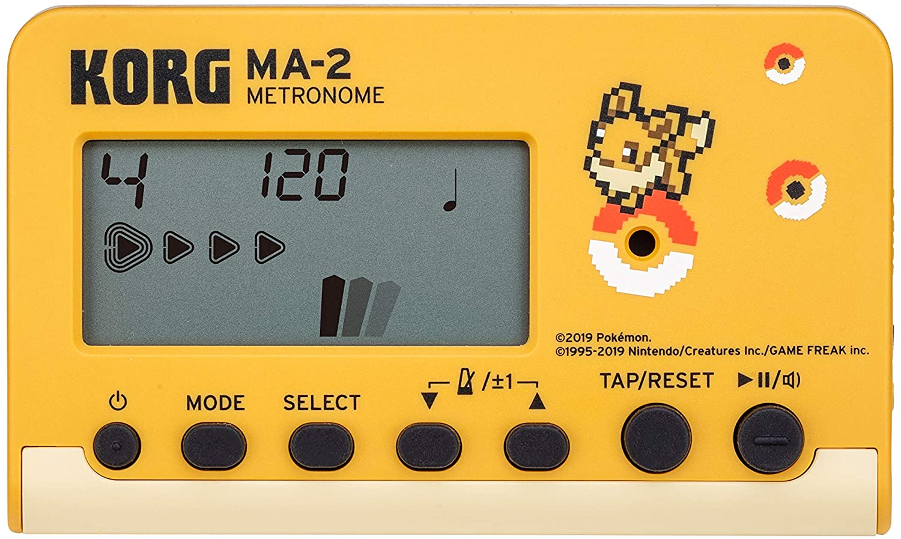

Pokemon Metronome
I want it
... juili
May 21, 2022
The song about barricades
I don't listen to "historical" music much, but my dear friend Tobias Haus sent me
a video of a duet (Harpsichord and Theorbo) playing "Les Baricades
Mïstérieuses"
(The Mysterious Barricades) by François Couperin. (Check out the video it's
great)
Sometimes historical performance just hits deep (҂◡_◡)
Toby and I will be performing it for friends this Friday - I'll try to tape and post here. The song
is typically a solo piece, but
Jean Rondeau & Thomas Dunford arranged/embellished it so the theorbo is playing some nice
harmonies
Since I think this is their original take, I couldn't find music - so I transcribed the theorbo part
for guitar. I believe all of the notes are correct. I took some...liberties with the rhythmic
notation.
If you play along with the video I think it will be clear what's going on
So here it is: A guitar transcription of Thomas Dunford's theorbo part of "Les Baricades
Mïstérieuses" by Couperin.
... juili
May 4, 2022
Link Dump: Indie web and more :)
Today a community in my periphery came into clearer sight for me. The IndieWeb is a term used for
multiple things, sometimes for the Yesterweb - but it turns out
there is
a consolidated community called the IndieWeb. They seem more
aligned as technologists
whereas the Yesterweb is focused on early web aesthetics and teaching non-programmers how to make
websites. It's like web3 but for and by the people!
I still have more to say, but I'm trying to keep these short for now - I'm excited by both
communities and their interplay :)
Link dump (some of these i haven't read all of and don't agree with all of)
- Indie Web talk
- adactio - somewhere in here is a tool to post your blog on all platforms but link back to your website...according to the talk above ヽ(´ー｀)ノ
- Angelheaded Hipsters Burning for the Ancient Heavenly Connection I burn for the heavenly connection. I like how this talks about twitter as a town square. Bring back town squares!
- Webmentions
- Space Catan - fuzzy wobble has some neat stuff
- Apparently you can just like...buy a payphone?
... juili
May 3, 2022
Visit here oft and I will you
Wow! I started this page today and now it's 3am.
This Pode (PodeCentral blogipode) will be
updated...semiregularly.....hopefully.
If you're reading this, drop your blog in the livechat and I will follow yours. You should update
regularly too. I want to try this to just see if maybe
it's better or supplemental to social media. what would it be like if a critical mass of my irl
friends had blogs like this pode right here??
Anyway here's some little snippets of stuff on my mind and life:
- Blue Dish in Des Moines??
- GLSL shaders as website layout components ヽ(´ー｀)ノ
- Subletting in LA or Brooklyn this summer ?..(any1 subletting? 👉👈)
- Maybe touring with Deer Scout in September?
- The People's Coalition of Tandy pcotandy.org
- Actually enjoying walks and listening to podcasts
... juili
April 28, 2022